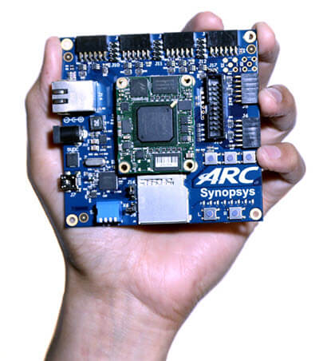

DesignWare(R) ARC(R) EM Starter Kit¶
Overview¶
The DesignWare(R) ARC(R) EM Starter Kit is a low-cost, versatile solution enabling rapid software development and software debugging, and profiling for the ARC EM Family of processors. The EM Family includes the EM4, EM6, EM5D, EM7D, EM9D, and EM11D cores. The Zephyr RTOS can be used with the EM Starter Kit.
{kind=link}
The ARC EM Starter Kit consists of a hardware platform, including pre-installed FPGA images of different ARC EM processor configurations with peripherals. Documentation for this board can be found at embARC website.
See also this URL for details about the board: Designware ARC EM Starter Kit website .
The latest version of EM Starter Kit is 2.3, developer can upgrade from 2.0/2.1/2.2 to 2.3 using latest firmware. The default configuration for EM Starter Kit boards can be found in boards/arc/em_starterkit/em_starterkit_defconfig.
The default SoC for this board supported in Zephyr is the EM9D. This configuration is a Harvard Architecture, with a separate instruction bus and data bus. Instruction memory is called ICCM and data memory is called DCCM. The configuration file for EM9D is found in soc/arc/snps_emsk/Kconfig.defconfig.em9d.
If you have a larger program, you can select the EM7D or EM11D, which gives access to 128KB DRAM with i-cache and d-cache. The configuration file for EM7D is found in soc/arc/snps_emsk/Kconfig.defconfig.em7d and EM11D is found in soc/arc/snps_emsk/Kconfig.defconfig.em11d.
Hardware¶
Board Layout¶
The ARC EM Starter Kit main board has 6 Pmod connectors. These can be configured to support attachment of GPIO, I2C, UART or SPI devices.
The board also has a 16MB SPI-FLASH and an SDCard for storage. There are 9 LEDs, 3 buttons, and 4 dip switches that can be used with GPIO.
The Xilinx Spartan(R)-6 LX150 FPGA can auto-load one of 3 FPGA SoC bit files which have the EM7D, EM9D, or EM11D SoC.
Documentation and general information for the board can be found at the embARC website, which also includes some free sample software.
Supported Firmware Versions¶
The EM Starter Kit has different versions, such as 1.0, 1.1, 2.0, 2.1, 2.2 and 2.3. In Zephyr, only firmware versions 2.2 and 2.3 are supported.
For EM Starter Kit 2.2, EM7D, EM9D and EM11D core configurations are supported.
Use
CONFIG_BOARD_EM_STARTERKIT_R22to select 2.2 version.Use
CONFIG_SOC_EMSK_EM7D,CONFIG_SOC_EMSK_EM9DorCONFIG_SOC_EMSK_EM11Dto select EM7D or EM9D or EM11D.
For EM Starter Kit 2.3, EM7D, EM9D and EM11D core configurations are supported.
Use
CONFIG_BOARD_EM_STARTERKIT_R23to select 2.3 version.Use
CONFIG_SOC_EMSK_EM7D,CONFIG_SOC_EMSK_EM9DorCONFIG_SOC_EMSK_EM11Dto select EM7D or EM9D or EM11D.
Supported Features¶
The Zephyr kernel supports multiple hardware features on the EM Starter Kit through the use of device drivers.
The EM Starter Kit supports 6 Digilent Pmod(TM) Interfaces, which enables the use of a large variety of pluggable modules for storage, communications, sensors, displays, etc. With the Pmod interface, you can prototype your applications using the Zephyr RTOS.
The table below shows which drivers are supported and which functionality can be found on which architectures:
Interface |
Controller |
EM9D |
EM11D |
Driver/Component |
|---|---|---|---|---|
INT |
on-chip |
Y |
Y |
interrupt_controller |
UART |
usb + 2 Pmods |
Y |
Y |
serial port-polling; serial port-interrupt |
SPI |
2 Pmods |
Y |
Y |
spi |
ADC |
n/a |
N |
N |
adc (can add via Pmod) |
I2C |
2 Pmods |
Y |
Y |
i2c |
GPIO |
6 Pmods |
Y |
Y |
gpio |
PWM |
n/a |
N |
N |
pwm |
The board has 3 (debounced and interrupting) buttons for use with GPIO, 4 dip switches, 9 LEDs, SDCard on SPI, and a 16MB SPI-Flash memory.
The SPI-Flash also holds 3 (or 4) separate FPGA CPU bit files, selectable via dip switch.
The SPI-Flash is also programmed with a bootloader. The bootloader can copy a program image from SPI-Flash into executable memory. Zephyr initialization will copy the initialized data section to the data memory if CONFIG_XIP is used.
Programming and Debugging¶
Required Hardware and Software¶
To use Zephyr RTOS applications on the EM Starter Kit board, a few additional pieces of hardware are required.
USB Cable (delivered as part of the ARC EM Starter Kit)
The USB cable provides power to the board; however, if the board is to run standalone, the universal switching power adaptor (110-240V AC to 5V DC), provided in the package, can be used to power the board.
Terminal emulator software for use with the USB-UART. Suggestion: Putty Website.
(optional) A collection of Pmods. See Digilent Pmod Modules or develop your custom interfaces to attach to the Pmod connector.
Set up the ARC EM Starter Kit¶
To run Zephyr application on correct arc core of EM Starter Kit, you need to setup the board correctly.
Connect the digilent usb cable from your host to the board.
Connect the 5V DC power supply to your board.
Select the core configuration of the board by choosing correct dip switch SW1 settings, then press then FPGA configure button located above the letter ‘C’ of the ARC logo on the board.
Then the board will be reconfigured with selected core configuration, you can download and debug Zephyr application now.
If you want to know more about how to use this board, you can take a look at the ARC EM Starter Kit User Guide.
Set up Zephyr Software¶
Since there are different firmware versions of EM Starter Kit, you need to choose the proper firmware version supported in Zephyr.
Three different configurations exist for this board:
EM7D: em_starterkit_em7d_defconfig
EM9D: em_starterkit_defconfig
EM11D: em_starterkit_em11d_defconfig
Building Sample Applications¶
You can try many of the sample applications or tests, but let us discuss the one called Hello World. It is found in samples/hello_world.
Configuring¶
You may need to write a prj_arc.conf file if the sample doesn’t have one.
Next, you can use the menuconfig rule to configure the target. By
specifying em_starterkit as the board configuration, you can select the ARC
EM Starter Kit board support for Zephyr.
# From the root of the zephyr repository
west build -b em_starterkit samples/hello_world
west build -t menuconfig
On this board you will also need to consider the “ARC SoC Selection” and set it either to EM9D or EM11D. To boot up the EM9D on the board, all dip switches should be UP except for switch 1. Other configuration choices are made in the normal way. To boot up the EM11D on the board, all dip switches should be UP except for switch 2. Next press the button above the letter C in the “ARC” logo on the silkscreen.
Building¶
You can build application in the usual way. Refer to Building an Application for more details. Here is an example for Hello World.
# From the root of the zephyr repository
west build -b em_starterkit samples/hello_world
Connecting Serial Output¶
In the default configuration, Zephyr’s EM Starter Kit images support serial output via the UART1 on the board. To enable serial output:
On your development environment, you will need to:
Open a serial port emulator (i.e. on Linux minicom, putty, screen, etc)
Specify the tty driver name, for example, on Linux this may be
/dev/ttyUSB1Set the communication settings to:
Parameter |
Value |
|---|---|
Baud: |
115200 |
Data: |
8 bits |
Parity: |
None |
Stopbits: |
1 |
Debugging¶
Using the latest version of Zephyr SDK(>=0.9), you can debug and flash EM Starterkit directly.
One option is to build and debug the application using the usual Zephyr build system commands.
west build -b em_starterkit <my app>
west debug
At this point you can do your normal debug session. Set breakpoints and then ‘c’ to continue into the program.
The other option is to launch a debug server, as follows.
west build -b em_starterkit <my app>
west debugserver
Then connect to the debug server at the EM Starter Kit from a second
console, from the build directory containing the output zephyr.elf.
$ cd <my app>
$ $ZEPHYR_SDK_INSTALL_DIR/arc-zephyr-elf/bin/arc-zephyr-elf-gdb zephyr.elf
(gdb) target remote localhost:3333
(gdb) load
(gdb) b main
(gdb) c
Flashing¶
If you just want to download the application to the EM Starter Kit’s CCM or DDR and run, you can do so in the usual way.
west build -b em_starterkit
west flash
This command still uses openocd and gdb to load application elf file to EM Starter Kit, but it will load application and then run immediately. If power is lost, the application will also lost due to power loss.
Most of the time you will not be flashing your program but will instead debug it using openocd and gdb. The program can be download via the USB cable into the code and data memories.
When you are ready to deploy the program so that it boots up automatically on reset or power-up, you can follow the steps to place the program on SPI-FLASH.
For instructions on how to write your program to SPI-FLASH, refer to the documentation on the ARC EM Starter Kit at the embARC website, which includes instructions for how to place an executable image onto the SPI-FLASH in such a way that it is understood by the bootloader.
Release Notes¶
The following is a list of TODO items: